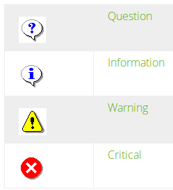

PyQt5中级教程
1 前言
PyQt相关必须学的最基础的知识我都放在 PyQt5入门 那篇文章里了，本文的内容不能说很重要也不能说不重要，只是我们在具体解决某个问题的时候，更多的是推荐搜索官网的关于各个类的描述性文档，本文的内容也大多来自官网的文档。所以本文也不求大和全，也没有那个人有那个精力能写出关于PyQt这一块大而全的文章出来。
本文的内容就两个：一是关于一些类的细节讨论；二是讲解一些小的入门例子。除了最重要最基础的知识放在PyQt5入门那篇文章之外，某些我觉得容易被人忽视的细节和技巧会放入 PyQt5杂项 一文中。
2 子类化QMainWindow
2.1 QApplication
在我们编写软件的开头要新建一个QApplication对象，这个QApplacation实例主要负责GUI程序的事件流和设置等。按照 这个网页 的讲解，最基本的是QCoreApplication，然后是其子类QGuiApplication，加入了事件控制和GUI的相关事情，最后才是QApplication，其是QGuiApplication的子类，加入了一些处理widgets的内容。1
QApplication很重要的一个方法（类似tkinter的mainloop），就是 exec_() ，开启GUI的事件驱动循环。
对于非窗体的GUI设计推荐使用QGuiApplication，其并不依赖QtWidgets子模块。一个GUI软件只能有一个QApplication，也就是所谓的主母窗体，通常parent参数不填就是默认的主母窗体。
一般程序QApplication创建的变量名app就是所谓的默认主母窗体，然后接下来我们在创建QMainWindow对象是并没有接受parent参数，也就是默认的app。通用的说法就是parent没填则默认其为顶层窗体，但我更喜欢理解为app就是默认的主母窗体。
2.2 QWidget
前面说道QMainWindow继承自QWidget，QWidget是最基本的窗体类型。QMainWindow加入了菜单栏和工具栏等等配置，就是大家常见的程序主界面。QApplication和QWidget和QMainWindow已经后面谈到的很多窗体在pyqt5里是放在QtWidgets子模块里面的，而在pyqt4里是放在QtGui子模块里面的， 关于这点读者请牢记在心，后面不再赘述了 。
2.2.1 构造函数
QWidget()
QWidget(parent)
QWidget的构造函数还是很简单的，有一个flag可选参数这里略过。如果parent参数没填，那么这个widget将是所谓的顶层窗体（我更愿意理解为parent是默认的主母窗体比如QApplication。）；如果parent是其他widget，那么这个widget就是其的子窗体，如果那个母窗体被删除了，子窗体也会被删除。
QWidget对象内部属性和方法极其丰富，一时是不可能全部了解看完的，只好慢慢看和研究了。
2.2.2 窗体相关
- self.show() 显示本窗体和它的子窗体，相当于让这个窗口可见，和 setVisible(True) 等价。
- self.hide() 隐藏本窗体，相当于 setVisible(False) 。
- self.raise() 将本窗体提升至显示顶层，如果用了activateWindow，可以使用它来确保窗口在顶层。
- self.lower() 将本窗体降到显示底层。
- self.close() 关闭本窗体的方法，通过调用本窗体的 closeEvent 事件。
2.2.3 事件捕捉
这里所谓的事件可以看作内置信号内置槽并且已经连接好了。这些事件如果重定义的话需要接受一个event参数。
- closeEvent ，关闭事件，你可以重新定义该事件来修改关闭行为。
- mousePressEvent
- mouseReleaseEvent
- mouseDoubleClickEvent
- resizeEvent
2.2.4 pos方法
返回本窗体相对母窗体（或者桌面）的位置信息。返回的是QPoint类型。
self.pos()
2.2.5 size方法
返回本窗体的尺寸信息。返回的是QSize类型。
self.size()
2.2.6 setWindowIcon
设置窗口图标。
self.setWindowIcon(QIcon icon) self.setWindowIconText(QString)
就是设置程序下面显示的图标和图标文字。（QString对象我测试了直接用python3的字符串对象也是可以的。）
2.2.7 setWindowTitle
设置窗口标题，会显示在上面。
self.setWindowTitle(QString)
2.2.8 activateWindow方法
激活窗口
self.activateWindow()
activateWindow方法用于激活这个窗口，这个窗口是可见的并且可以键盘输入。点击窗口的标题栏一个窗口就上前显现了用的就是这个函数。
2.2.9 setToolTip方法
设置本widget的提示信息。
self.setToolTip(QString)
2.3 QMainWindow
QMainWindow的使用都是继承QMainWindow，然后定义自己的MainWindow类，QMainWindow的布局改动性已经很少了，有一个自己特有的布局mainwindowlayout，你所能做的就是DIY菜单栏，工具栏状态栏和dockwidget，以及对centralWidget进行包装。

central widget一般是QTextEdit或QGraphicsView，只能加入一个窗体，通过 setCentralWidget 方法来添加。除了前面谈到的Layout对象可以封装多个子窗体外，等下还要谈到一些窗体是专门用于封装多个子窗体的。
2.3.1 menuBar方法
一般创建菜单栏就是用QMainWindow对象的menuBar方法创建一个菜单栏对象。
self.fileMenu = self.menuBar().addMenu("&File")
self.fileMenu.addAction(self.newAct)
2.3.2 addToolBar方法
QMainWindow对象自带的 addToolBar 方法，用于给QMainWindow创建工具栏对象。该方法可以接受一个QToolBar对象，从而将该工具栏加进来，或者接受一个字符串对象，简单的新建一个工具栏。
self.fileToolBar = self.addToolBar("File")
self.fileToolBar.addAction(self.newAct)
2.3.3 addDockWidget方法
QMainWindow对象的 addDockWidget 方法给其插入一个停靠窗体对象QDockWidget。该方法并不返回所谓的QDockWidget对象，而只是插入，所以该方法必须接受一个QDockWidget对象参数，其为该方法的第二个必填参数。该方法的第一个必填参数是你想插入停靠窗体的区域，有以下可选项：
- Qt.LeftDockWidgetArea
- Qt.RightDockWidgetArea
- Qt.TopDockWidgetArea
- Qt.BottomDockWidgetArea
- Qt.AllDockWidgetAreas Qt.NoDockWidgetArea
需要导入Qt子模块。
2.3.4 加入状态栏
QMainWindow对象的 statusBar 将会创建并返回一个QStatusBar对象，QStatusBar对象最基本的方法就是 showMessage ，其接受一个字符串，然后将其显示在状态栏上。
此外QMainWindow对象还提供了 setStatusBar 方法用于替换其的状态栏对象。 statusBar 方法不接受参数， setStatusBar 方法当然接受一个状态栏对象。
2.3.5 保存窗口状态
QMainWindow对象有 saveState 方法，方便保存主窗口的工具栏和停靠窗体的状态。然后QWidget有 saveGeometry 方法方便保存本窗体的图形几何状态。
2.4 QMenuBar
QMenuBar提供横向的菜单栏，你可以通过QMenuBar创建一个菜单栏对象，然后调用菜单栏对象的addMenu方法添加菜单列。
2.5 QToolBar
通过QToolBar类构建一个工具栏对象，工具栏上面加上动作用 addAction 方法或 insertAction 方法。addAction方法接受一个QAction对象，而insertAction接受两个QAction对象，一个是之前的QAction，一个是之后的，好插入中间。
2.5.1 插入分隔符
调用工具栏对象的 addSeparator 或者 insertSeparator 方法来调用对象。其中addSeparator方法不接受参数，insertSeparator方法接受一个QAction参数，表明在其前面插入分隔符。
2.5.2 插入子窗体
还可以往工具栏里面插入子窗体，用 addWidget 方法或 insertWidget 方法，其中addWidget接受一个窗体类型对象，而insertWidget接受两个窗体类型对象，第一个参数是QAction对象表明在某动作对象之前插入，然后第二个参数是子窗体对象。合适的子窗体有QSpinbox或QDoubleSpinbox或QComboBox。
当工具栏上的按钮被点击是，它将释放 actionTriggered 信号。
2.5.3 固定工具栏
- self.isMovable() 返回bool值，用来检测该工具栏是否可移动。
- self.setMovable(bool ) 设置工具栏可移动或不可移动，默认可移动True。
- self.allowedAreas() 可用的值有：
- Qt.LeftToolBarArea
- Qt.RightToolBarArea
- Qt.TopToolBarArea
- Qt.BottomToolBarArea
- Qt.AllToolBarAreas
- Qt.NoToolBarArea
需要引入Qt子模块。
- self.isAreaAllowed() 参数类似上面。
工具栏对象一般还是推荐在QMainWindow对象上使用。
2.6 QDockWidget
停靠窗体对象，QDockWidget对象。QDockWidget对象可以通过 setWidget 方法来添加其内的子窗体。
2.6.1 构造函数
QDockWidget(parent) QDockWidget(str , parent)
其上的第二种格式str字符串对应的是该停靠窗体的标题，等下要显示在上面的。然后parent可以不填，默认就是没有母窗体，也就是顶层窗体，或者我愿意理解为默认就是唯一的主母窗体（即你的app）。
2.6.2 设置可停靠区域
可通过 allowedAreas 方法来设置该可停靠对象的可停靠区域，接受的参数和前面讨论可停靠区域时说的是一样的。
2.7 QStatusBar
如前所述，QStatusBar，状态栏对象，一般通过QMainWindow对象的statusBar方法创建，用setStatusBar方法替换。状态栏对象要显示某段文字用 showMessage 方法。
此外状态栏对象还有 messageChanged 内置信号， clearMessage 内置槽。
你可以通过 currentMessage 方法来提取当前状态栏的文字信息。
你可以通过 addWidget 方法来给状态栏添加一个子窗体，通常是QLabel，QProgressBar或QToolButton。你可以通过 removeWidget 方法来删除一个子窗体，此外类似的还有 addPermanentWidget 方法来添加一个永久的子窗体，这些方法都接受一个QWidget对象。
2.8 QAction
在前面加上菜单栏一小节中我们谈到用addMenu方法会返回一个菜单对象，如果用菜单对象的addAction方法会返回一个动作对象，这个动作对象就是QAction类的对象。
QAction类在pyqt5中在QtWidgets子模块那里，在pyqt4中是在QtGui那里。QAction对象下面都称作 动作对象 ，动作对象通常都依附在某个窗体上，比如依附在菜单对象上。
QAction有内置信号 triggered ，当我们点击菜单的时候，实际上就是触发了triggered信号，然后connect后面的槽。
类似的其他内置信号还有，hovered（比如你的鼠标悬停在菜单，工具栏按钮上将被触发），toggled（操作对象有个 isChecked() 的状态，如果这个状态改变了那么信号将会被触发。），changed（不太常用，动作对象被改变时触发）。
一般软件某些内部操作通常都统一成为某个动作对象，比如说菜单栏的文字加粗和工具栏的文字加粗，如果都用动作对象管理，那么它们将共用checked状态。
2.8.1 构造函数
QAction(self)
QAction('text' , self)
QAction(QIcon icon, 'text' , self)
QAction的构造函数如上，从最简单说明动作对象的母窗体，一般推荐所有动作对象都依附在实例self上（如self.newAct这样的形式。），也就是一般是QMainWindow对象，然后parent一般就填self，即实例manwindow。
QIcon图标对象可以通过动作对象的 setIcon 方法来确定，类似的有 setText 方法来确定动作对象要显示的文字。
然后还有 setShortcut 方法来确定动作对象的快捷键，和 setStatusTip 方法来确定动作对象的状态栏提示信息，还有 setWhatsThis 和 setToolTip 方法（弹出的提示信息）。
以上方法都接受一个参数，setIcon接受QIcon对象，然后setShortcut接受一个快捷键对象，其他接受一个文本对象。
2.8.2 setEnabled方法
动作对象的 setEnabeled 方法可用来让某个动作对象可用或不可用，然后其图标也会变化，这通常给人很好的提示信息。
下面这段代码首先将剪切和赋值操作禁用，然后将QTextEdit对象的内置信号copyAvailable和动作对象的setEnabled方法或说槽相连，如果你选择一段文字或者不选一段文字，copyAvailable信号就会发送，参数一个bool值，这个bool值将传递给setEnabled方法，如果选择，则True，则setEnabled(True)，False情况类似。
self.cutAct.setEnabled(False) self.copyAct.setEnabled(False) self.textEdit.copyAvailable.connect(self.cutAct.setEnabled) self.textEdit.copyAvailable.connect(self.copyAct.setEnabled)
2.9 QIcon
图标对象QIcon在pyqt4和pyqt5里面都在QtGui子模块那里。QIcon最常见的使用就是用构造函数来返回一个QIcon对象。
2.9.1 构造函数
QIcon() QIcon(const QPixmap & pixmap) QIcon(const QIcon & other) QIcon(QIcon && other) QIcon(const QString & fileName) QIcon(QIconEngine * engine)
最常用的是第四种形式，也就是用文件名来引入某个图标文件。
2.10 QLabel
QLabel是最基本的显示文本或者图片窗体。可以通过 setText 方法来显示普通文本或富文本，通过 setPixmap 方法来显示图片（QPixmap对象），可以通过 setMovie 方法来显示视频（QMovie对象），可以通过 setNum 方法来显示一个int或double类型的数字。
QLabel对象默认的是：左对齐，垂直居中。对齐方式可以通过 setAlignment 方法来调整。对齐的选项有：
- Qt.AlignLeft 左对齐
- Qt.AlignRight 右对齐
- Qt.AlignHCenter 在有效空间内居中对齐
- Qt.AlignJustify 在有效空间内两端对齐
2.10.1 clear方法
清除QLabel对象的内容，等同于setText("")。
2.10.2 HTML语法
QLabel("<h2><i>Hello</i>
<font color=red>Qt!</font></h2>")
如上所示QLabel是支持HTML语法的。具体是HTML 4的一个子类。
2.10.3 text方法
QLabel对象现在的文本内容。本方法不接受参数。
2.11 QPushButton类
QPushButton也就是GUI设计中最常见的按钮。
2.11.1 构造函数
QPushButton(QWidget parent = None) QPushButton(QString text, QWidget parent = None) QPushButton(QIcon icon, QString text, QWidget parent = None)
我们看到按钮显示的文字和图标在这里是可以设置的。QPushButton中的文字 不支持 HTML语法。这里的文字和图标后面可以通过 setText 方法和 setIcon 方法来设置。
2.11.2 禁用按钮
QPushButton对象的 setEnabled 方法，接受一个bool值参数，如果是False，则按钮会被禁用。
2.11.3 clicked
内置信号 clicked ，即点击按钮则触发该信号。这是按钮最常用的一个信号。
2.11.4 show和hide
show和hide方法，不接受参数，隐藏按钮或者显示按钮。
2.11.5 setEnabled方法
接受一个bool值，将按钮变为不可用，既不可点击，颜色也隐藏背景中。
2.12 QMessageBox类
弹出一个对话框给用户做出一些选择或者给出一些提示信息。
QMessageBox对象的文字内容用 setText 方法设置。如果要显示这个消息窗口就执行 exec() 方法。QMessageBox对象用 setInformativeText 方法来设置进一步的提示信息。 setStandardButtons 方法来设置一系列你希望显示的标准按钮，这些标准按钮之间用逻辑或符号"|"连接，具体按钮显示的顺序和操作系统环境相关。然后 setDefaultButton 方法设置一个默认按钮。
当执行了QMessageBox对象的exec方法，该方法将会返回一个int值，这个int值对应着某个标准按钮，即你点击的那个。你可以直接将这个int值和QMessageBox.Ok等等进行比较判断。
2.12.1 标准按钮
下面是标准按钮一览：
- QMessageBox.Ok 确定
- QMessageBox.Open 打开
- QMessageBox.Save 保存
- QMessageBox.Cancel 取消
- QMessageBox.Close 关闭
- QMessageBox.Discard 丢弃
- QMessageBox.Apply 应用
- QMessageBox.Reset 重置
- QMessageBox.RestoreDefaults 恢复至默认
- QMessageBox.Help 帮助
- QMessageBox.SaveAll 全部保存
- QMessageBox.Yes 是
- QMessageBox.YesToAll 全部是
- QMessageBox.No 否
- QMessageBox.NoToAll 全部否
- QMessageBox.Abort 放弃
- QMessageBox.Retry 重试
- QMessageBox.Ignore 忽略
- QMessageBox.NoButton 无效的按钮
2.12.2 setIcon方法
用 setIcon 方法来设置该QMessageBox对象的提示图标，可用的标准提示图标有：
- QMessageBox.NoIcon
- QMessageBox.Question
- QMessageBox.Information
- QMessageBox.Warning
- QMessageBox.Critical
默认的是NoIcon。其他图标样子如下所示：

2.12.3 静态方法
一般不推荐使用静态方法，不够灵活，下面是两个常见的QMessageBox的静态方法。
2.12.3.1 about方法
需要三个参数，第一个参数是窗口的依附父窗口，第二个参数是窗口的标题，第三个参数是窗口的文字信息。通常用于显示本程序的一些简介信息。
2.12.3.2 aboutQt方法
最少只需要一个参数，即弹出窗口的依附父窗口。弹出常见的关于Qt的一些信息。
2.13 QFileDialog
弹出一个文件或目录选择对话框。
2.13.1 静态方法
简单的使用常通过静态方法来实现：
- getOpenFileName
- 返回用户选定的已存在文件。比如：
fileName , _ = QFileDialog.getOpenFileName(self, self.tr("Open File"),
"/home",
self.tr("Images (*.png *.xpm *.jpg)"))
这里filename是字符串类型，就是你选择的文件的名字（包含绝对引用地址），第二个参数是显示的文本提示信息；第三个参数是默认打开的目录，空字符串表示当前工作目录，这里是 /home ；第四个参数是过滤器，空字符串表示所有的文件都显示，这里是所有的png，xpm，jpg文件。更加复杂的表达如下所示：
"Images (*.png *.xpm *.jpg);;Text files (*.txt);;XML files (*.xml)"
注意getOpenFileName静态方法返回的是一个数组，第二个数组似乎没有什么意义，要如上所写的格式把具体文件名路径字符串提出来。
- getExistingDirectory
- 返回用户选定的已存在的目录。第一个参数是对话框依附的父窗口，第二个参数是弹出窗口的标题，第三个参数是窗口弹出时默认打开的位置，第四个参数是options。
dir = QFileDialog.getExistingDirectory(self, self.tr("Open Directory"),
"/home",
QFileDialog.ShowDirsOnly
| QFileDialog.DontResolveSymlinks)
不用静态方法自己DIY的QFileDialog对象，可用的方法有：
2.13.2 setFileMode方法
- QFileDialog.AnyFile 默认的模式，不管文件是不是存在，另存为的时候有用。
- QFileDialog.ExistingFile 文件必须存在。
- QFileDialog.Directory 返回目录，文件和目录都会显示。
- QFileDialog::ExistingFiles 返回多个文件。
2.13.3 setNameFilter
就是前面谈及文件过滤器，
dialog.setNameFilter("All C++ files (*.cpp *.cc *.C *.cxx *.c++)")
dialog.setNameFilter("*.cpp *.cc *.C *.cxx *.c++")
2.13.4 setViewMode方法
设置视图模式，有两个值可选，QFileDialog.Detail，这是默认的，会显示详细信息。此外还有一个QFileDialog.List，显示简要信息。
2.13.5 selectedFiles方法
该方法不接受参数，返回QFileDialog对象具体选择的文件或目录列表。
fileNames = dialog.selectedFiles()
2.14 QPoint
QPoint类在QtCore子模块里面，其描述了在平面上的一个点，有 x() 方法和 y() 方法来调用具体坐标轴上x和y的值。还有 setX 方法和 setY 方法来设置这两个的值。
QPoint对象可以使用符号 + - * / ，具体运算规则类似线性代数的矢量，两个QPoint对象必须对应x相加，y彼此相加。然后乘以某个数，x和y都乘以该数等。
构造函数有两种形式：
QPoint() QPoint(int xpos, int ypos)
2.15 QSize
QSize类在QtCore子模块里面，QSize对象描述了一个二维物体比如窗体的几何尺寸。其有两个属性， width() 和 height() ，可通过 setWidth 和 setHeight 方法来设置。
类似上面的QPoint对象，QSize也支持加减乘除符号。构造函数有两种形式：
QSize() QSize(int width, int height)
2.16 QTextEdit
QTextEdit对象也就是常见的文本编辑器对象，用于编辑和显示文本或富文本。
2.16.1 setHtml方法
插入富文本，原字符串将被删除。
2.16.2 toHtml方法
富文本的字符串输出。
2.16.3 clear方法
clear()，清除所有的文本内容。
2.16.4 insertHtml方法
是通过QTextEdit类的QTextCursor类来实现的，当前编辑器的当前QTextCursor类通过textCursor方法调用。
edit.textCursor().insertHtml(fragment)
上面的命令将在该编辑器的当前鼠标位置插入富文本内容。
2.16.5 insertPlainText方法
同上，插入普通文本内容。
2.16.6 append方法
在当前编辑器末尾插入某个文本内容。
QTextEdit.append(str)
2.16.7 cut,copy,paste方法
也就是大家熟知的剪切，复制和粘贴方法。这几个方法都不需要参数，直接通过QTextEdit对象来调用。
2.16.8 find方法
2.16.9 textChanged信号
QTextEdit对象的内置信号textChanged是很常用的一个信号，如果编辑器内的文本发生了变化那么就会发送这个信号。
2.16.10 isModified方法
QTextEdit对象可以通过document()方法来返回其内的QTextDocument对象，然后调用isModified()方法来确认文档是否被修改过。相关的还有setModified(bool)方法。
2.17 QTextStream
QtCore的QTextStream类提供了方便的读取和写文件接口。
2.17.1 readAll方法
读取流的整个内容然后将其返回为字符串。
2.17.2 <<符号
将某个字符串写入文本流中。
outf << self.textEdit.toPlainText()
2.18 QFile
如下将一个具体的文件名路径字符串处理为QFile对象。
QFile(str)
2.18.1 open方法
打开文件，支持的打开模式有：
2.18.2 exists方法
QFile.exists(':/icons/retext.png')
判断某个文件是否存在。
2.19 QFileInfo
QFileInfo类提供了跨平台的查看文件的一些信息的方法。比如 fileName() 方法返回文件名， path() 方法返回路径名。还有 baseName() 方法返回简短的文件名， suffix() 方法返回后缀， completeSuffix() 方法返回完整的后缀（比如test.tar.gz的完整后缀就是.tar.gz）。
2.20 实例讲解：editor编辑器
请看到[works]→[editor]文件夹。这个例子是对前面涉及的知识的一个总结。
首先请看到editor.qrc文件还有icons文件夹和translations文件夹，然后请看到mian.py文件，这涉及到前面谈论的资源文件的管理，国际化和pyqt程序的基本入口格式。
然后程序的主体部分就是Editor.py文件定义的Editor类，其是QMainWindow的一个子类。
def __init__(self,parent=None, *args):
super().__init__(parent, *args)
上面的第1行和第2行是常见的重定义构造函数格式，其中第2行的作用就是继承自父类的构造函数，一般parent参数也传递进来。
self.curFile = ''
这里是新建了一个变量，self.curFile，用于存储当前的文件名，暂时为空字符串值。
self.textEdit = QTextEdit()
self.setCentralWidget(self.textEdit)
这里是新建了一个QTextEdit对象，pyqt内置的简单文本编辑器。然后把主窗口的中央窗体设置为这个文本编辑器。
第20-23行是创建动作对象，创建菜单，创建工具栏和创建状态栏。这些函数都是自定义函数，后面慢慢说明之。
我们再来看看这个简单的文本编辑器是如何管理配置文件的。第25行：
定义的函数具体是：
读取配置文件函数，读者可以到
\begin{tcbbash}[] ~/.config/Trolltech \end{tcbbash}那里看看，是不是有个Application Example.conf文件。然后我们来看看这个小editor还真的有记忆窗口几何的能力。
这是因为在重新定义closeEvent事件时，首先确认文档是否已经保存了，如果已经保存了，那么将首先执行writeSettings函数，写入配置，然后才退出程序。
我们再看到writeSettings方法，
这里的setValue方法我们熟悉，后面的size方法和pos方法调用的是self实例的方法，实际是QMainWindow继承自QWidge类而来，size返回本窗体的尺寸，pos方法返回本窗体相对母窗体的位置，如果是顶层窗体，则是相对于桌面的值。
然后readSettings方法读取关闭窗体时的窗体pos信息和size信息，然后调用resize方法，接受一个QSize对象，实际调整窗体尺寸，然后调用move方法，接受一个QPoint对象。这样窗体就和上一次的窗体尺寸和位置一样了。
第27行将QTextEdit的textChanged信号和后面定义的槽（函数）setWindowModified连接起来。没有传递参数。
setWindowModified函数主要是修改编辑器的标题，好显示本文档已有修改，还没有保存。然后新打开的文件，保存后的文件都将执行setCurrentFile函数，从而标题将没有那个\verb+-*-+前缀。
现在我们来看看69-116行定义的动作对象，我们看到self.newAct这个动作对象，后面的QAction构造函数前面三个必填参数我们都看得懂了，然后后面的可选参数：
\begin{itemize} \item shortcut 设置快捷键 \item statusTip 设置状态栏提示信息 \item triggered 设置动作如果triggered之后connect的槽。 \end{itemize}然后我们看到其定义的createMenus函数，并没有什么新知识了，就是常规创建菜单操作。接下来是创建工具栏操作，我相信读者不费吹灰之力就能看懂这几行代码了，然后就是创建状态栏，也很简单。
那么接下来的知识点就是上面的动作对象具体连接的槽或者函数的工作机制。
首先看到自定义的maybeSave函数，这是在编辑器设计概念中很重要的一个函数。这个函数主要用于判断文档是否保存了。
如果没有发生修改那么返回True；如果发生了修改，那么将会弹出一个对话框，点击Save那么将会保存文档，点击Cancel那么将不会做什么，返回返回False，也就是没有保存。
我们看到前面的关闭事件，首先用这个函数确认一下是否保存了。然后新建文件也是先确认是否保存，然后再考虑是否调用clear清除。
接下来还剩下打开文件，保存和另存为文件的相关函数，其实你使用python语言自带的方法也是可以的，不清楚为什么Qt模块的这些处理函数有何好处。
3 子类化QDialog
\section{QComboBox} QComboBox对象是一个按钮点击可以弹出一个列表选项，其作用是为了给用户一系列的选定值同时又占据最少的GUI空间。
\subsection{addItem方法} 往QComboBox对象里面添加内容，可以添加字符串或者QIcon对象。如果添加字符串的话，第一个参数就是要添加的那个字符串；如果要添加图标的话，那么第一个参数就是要添加的QIcon对象，此外第二个参数是要添加的字符串。
后面还有一个可选项，一般不用填吧，还没明白具体是什么意思。
此外还有\textbf{addItems}方法接受一个字符串列表。
\subsection{insertItem方法} 和上面的addItem方法参数类似，除了前面还加入了一个新的参数index，也就是控制具体插入的位置，如果index是0或者负数，那么就是插入当前QComboBox对象items列表的最前面。
类似的还有insertItems方法。
\subsection{currentText方法} QComboBox对象调用\textbf{currentText()}方法返回当前选中的选项的字符串值，setCurrentIndex(
\subsection{count方法} \textbf{count()}方法返回QComboBox对象所含选项的个数。QComboBox对象有个值控制所包含选项的最大个数，用\textbf{maxCount()}方法查看这个值，此外还有\textbf{setMaxCount}方法来修改这个值。
\subsection{currentIndexChanged信号} 很重要的一个内置信号，不管是用户还是程序内部，只要QComboBox对象的index索引发生了改变，那么就会释放该信号。此外还有一个\textbf{activated}信号和上面的\textbf{currentIndexChanged}信号有点类似，除了必须是用户的操作才会释放该信号。这两个信号都有两个版本，一个版本是带的int参数（即弹出列表的index），另一个是字符串参数，即具体的文字内容。
\subsection{highlighted信号} \textbf{highlighted}信号，这个信号用的会比较少，当用户高亮列表中的某一项时触发。
\section{QSpinBox} QSpinBox对象主要是用来方便输入某个范围内的int值。
\subsection{setRange方法} 接受两个int参数，一个最小值，一个最大值，设置QSpinBox对象的可选数值范围。最小值可以通过\textbf{minimum()}查看，可以通过\textbf{setMinimum}方法设置。类似的最大值有maximum方法和setMaximum方法。
\subsection{setValue方法} \textbf{value()}方法返回当前QSpinBox对象的值，\textbf{setValue}(int)设置某个值。
\subsection{valueChanged信号} 很常用的一个信号，\textbf{valueChanged}信号，如果QSpinBox对象的值和之前的值不同的时候触发。每次QSpinBox对象会释放两个valueChanged信号，一个是int值，一个是str值。字符值会加上\textbf{prefix()}和\textbf{suffix()}，也就是前缀和后缀。你可以通过setPrefix和setSuffix方法来具体设置它们。
\subsection{text方法} text()方法返回当前QSpinBox对象的字符串值，包含前缀和后缀。
\subsection{singleStep方法} \textbf{singleStep()}方法返回使用GUI的箭头（而不是手动输入时）数值改变的最小的步长，可以通过\textbf{setSingleStep}方法具体设置这个值。
\subsection{specialValueText方法} \textbf{specialValueText()}方法设置特殊值（最小值）时显示的文本。
\section{QDoubleSpinBox} 和QSpinBox类似，不同的是接受\textbf{double}类型数值。上面介绍QSpinBox对象的各个方法都可以用。下面介绍QDoubleSpinBox对象额外的方法。
\subsection{decimals方法} \textbf{decimals()}方法返回QDoubleSpinBox对象要显示的小数点位数。可以通过\textbf{setDecimals}来具体设置它。
\section{QSlider} QSlider对象用处和QSpinBox有点相似，相比较其可以更加快速地拖动选定某个（没有特别精确的要求）值。
QSlinder的构造函数第一个参数可以是可选参数来控制滑动条的方向，默认是竖向，其就两个选项值： \textbf{Qt.Vertical}，\textbf{Qt.Horizontal}。第二个参数就是常见的parent，一般通过布局控制就可以不用填了。
前面说道QSlider对象和QSpinBox对象有点相似，实际上它们的使用各个方法也很类似。将一个QSpinBox对象改为QSlider对象除了初始构造函数稍作修改，后面几乎不用做什么修改。比如请看下面这些方法名字：
\begin{Verbatim} setRange setMinimum setMaximum setValue valueChanged value setSingleStep \end{Verbatim}其中setRange方法在官方文档中并没有提及，我试了一下也是可以正常使用的。读者一看应该就明白它们的意思和用处了，然后QSlider对象的基本使用就差不多了。
QSlider还有一个tickmark控制，这里先暂时略过。
\section{currency小程序}
\section{interest小程序}
\section{QValidator} QValidator类在QtGui子模块内，QValidator本身是抽象的，具体的使用是要用它的子类QIntValidator，QDoubleValidator和QRegExpValidator。
\subsection{QIntValidator} QIntValidator对象的初始化函数如下所示，其中最小值和最大值可以不先设置，其后通过\textbf{setRange}方法来设置，parent一般设置为某QLineEdit对象上而不是设置为默认的0即主母窗体上。
\begin{Verbatim} QIntValidator(parent) QIntValidator(minimum, maximum, parent) \end{Verbatim}\subsection{QDoubleValidator} QDoubleValidator对象的初始化函数如下所示，其中最小值和最大值可以不先设置，其后通过\textbf{setBottom}和\textbf{setTop}方法来设置，小数点位数可以通过\textbf{setDecimals}方法来设置。parent一般设置为某QLineEdit对象上而不是设置为默认的0即主母窗体上。
\begin{Verbatim} QDoubleValidator(parent) QDoubleValidator(bottom, top, decimals, parent) \end{Verbatim}\subsection{QRegExpValidator} QRegExpValidator对象让输入的文本符合某个正则表达式。
\section{QRegExp}
\section{QLineEdit} QLineEdit也就是常见的行文本输入对象。值得一提的是里面也有和QTextEdit一样的redo，undo，cut，copy，paste和拖动等操作。其中拖动需要用\textbf{setDragEnabled}方法设置一下。
\subsection{echoMode方法} \textbf{echoMode()}方法，返回当前QLineEdit对象的echo mode。默认值是\textbf{QLineEdit.Normal}，此外还有\textbf{Password}，\textbf{PasswordEchoOnEdit}和\textbf{NoEcho}。
其中Password模式很有用，在输入密码时行编辑器不会显示具体的输入信息。
\subsection{maxLength方法} \textbf{maxLength()}方法，返回当前QLineEdit对象允许输入文本的最大长度。可以通过\textbf{setMaxLength}方法来设置它。
\subsection{setValidator方法} 如果接受的参数是0，那么就是没有validator，也就是随便输入除了最大字符串长度的限制。此外\textbf{setValidator}方法接受一个QValidator对象，输入的文本将接受它的验证，如果不符合输入将不会被接受。
\subsection{setInputMask方法}
\subsection{文本编辑的一些方法}
\begin{itemize} \item \textbf{text()}方法，提取出当前输入框的文本内容。 \item \textbf{clear()}方法，清除当前内容。 \item \textbf{setText}方法，具体设置成某个文本内容。 \item \textbf{insert}方法，和预想的不一样，只接受一个str参数，如果选中了某段文本，则替换之，然后验证之后的结果。没有选中的insert命令会在行编辑器后面插入某个文本。 \item \textbf{setSelection}方法，接受两个int值，表示开始的位置和\uwave{长度}。 \item \textbf{cut}，\textbf{copy}，\textbf{paste}方法，和QTextEdit对象类似。 \end{itemize}\subsection{setAlignment方法} 有三个可选值：\textbf{Qt.AlignLeft}，\textbf{Qt.AlignCenter}，\textbf{Qt.AlignRight}。具体是左对齐，居中和右对齐。
\subsection{setReadOnly方法} 接受一个bool值，让输入框只读(True)或既可读也写(False)。默认是False。类似的QTextEdit对象也有一个这样的方法。
\subsection{一些内置信号} 行编辑器对象的文本发生改变是将会释放\textbf{textChanged}信号，信号附带当前的文本内容；类似的还有\textbf{textEdited}信号，它只在用户编辑时才释放信号，同样信号也附带当前文本内容。
如果行编辑器其内光标移动时将会释放\textbf{cursorPositionChanged}信号，这个信号自带两个int值，第一个值是光标之前的位置，第二个值是光标之后的值。
当Return或者Enter按键按下时将会释放returnPressed信号；类似的还有editingFinished信号，用户按下Return或者Enter还有行编辑器失焦\footnote{比如用户点击窗体的其他部件去了。}将会释放该信号。这两个信号都不带参数。注意如果行编辑器对象有验证器，没通过验证器的文本是不会激活这两个信号的。
\section{QGroupBox} QGroupBox是容器类窗体带有标题。其初始化函数如下所示：
\begin{Verbatim} QGroupBox(parent) QGroupBox(title , parent) \end{Verbatim}\textbf{title()}方法返回该QGroupBox对象的标题，可以通过setTitle方法来具体设置它。
\subsection{setCheckable方法} 让QGroupBox对象具有一个check开关，默认是False没有。你可以通过\textbf{setChecked}方法来具体设置是check还是不check。
\subsection{setFlat方法} 接受一个bool值，让QGroupBox对象更加紧凑没有frame，默认是False不Flat。
\section{QRadioButton} 多个QRadioButton组成一组互相排斥的单选项。一般将它们都放入一个QGroupBox对象中去。其初始化函数如下所示：
\begin{Verbatim} QRadioButton(parent ) QRadioButton(text, parent ) \end{Verbatim}具体显示的文本内容也可以其后通过\textbf{setText}方法来设置，文本内容支持\&{}的快捷键表达。还可以通过\textbf{setIcon}方法来设置一个图标对象。
\subsection{setChecked方法} 用\textbf{isChecked()}方法来查看某个QRadioButton对象是否选中了，用\textbf{setChecked}(bool)方法来具体设置选中状态。
\subsection{toggled信号} 当一个QRadioButton对象的isChecked状态发生改变时，它将释放\textbf{toggled}信号，信号自带一个bool值，表示最后该QRadioButton对象的isChecked的状态。
\section{QCheckBox} QCheckBox对象和上面的QRadioButton对象有点类似，除了它处理的是多选情况。初始化函数与QRadioButton类似，text参数也可以通过\textbf{text()}方法查看和\textbf{setText}方法设置。同样也有\textbf{setIcon}方法。
\subsection{setChecked方法} \textbf{isChecked()}方法返回该QCheckBox的选中状态，同样也有\textbf{setChecked}方法，同样isChecked状态发生改变也会释放\textbf{toggled}信号。
\subsection{setTristate方法} 默认QCheckBox对象只有勾上和没勾上两个状态，你可以通过\textbf{setTristate}(bool)方法来使其具有三个状态。如果是三个状态的QCheckBox对象，你需要用\textbf{checkState()}方法来查看具体的状态，然后用\textbf{setCheckState}来具体设置之。可设置的选项有：\textbf{Qt.Unchecked}，\textbf{Qt.PartiallyChecked}，\textbf{Qt.Checked}。
\section{pen小程序}
\section{timer小程序}
4 子类化QWidget
QWidget类继承自QObject和QPaintDevice，是很基础的一个类，可以看作用户界面组件的原子。所以深度定制子类化QWidget算是我们学习PyQt的一个山峰了。
QWidget对象从操作系统中接受鼠标，键盘等事件，然后在屏幕上画出一些东西来表现自己。每一个QWidget对象都是矩形的，一个QWidget对象没有parent叫做window（顶层窗体）。
\section{addressbook小程序} 最基本的子类化QWidget就是用PyQt的内置窗体组合成为一个复合窗体。本例子来自PyQt5的样例，首先part1.py很容易理解，就不需要多说了。
在part2.py中，在程序面板的右侧加上了add，sumit和cancel按钮，然后加上了一些按钮可用或不可用和一些相关动作。属于pyqt里面很基本的知识了。
在part3.py中， 下方加入按钮和相关布局控制还是很好理解的，这部分主要加入的两个函数next和previous。这两个函数都采用了相同的机制，然后字典类的iter函数经过了额外的处理：
\begin{pyline}{pyqt5-works/ch10/addressbook/part3.py}{7}{14} \end{pyline}SortedDict类继承自python语言内置的字典类，然后对iter函数的机制稍作修改。让其返回的是排过序的键，这样next和previous翻看是按照排序之后的键来翻看的。其中next函数和previous函数除了翻看迭代器恰好相反之后，大致相同。
在part4.py中，程序自建了几个模式：
\begin{pyline}{pyqt5-works/ch10/addressbook/part4.py}{17}{17} \end{pyline}后面添加Edit按钮和Remove按钮没什么好讲的，这里的几个视图模式重构了之前的程序的很多地方，比如addContact函数，之前有几行代码用updateInterface函数将界面更新为adding模式。
\begin{pyline}{pyqt5-works/ch10/addressbook/part4.py}{89}{89} \end{pyline}后面的editContact函数也是如此，如何简单更新数据之外，就是更新界面：
\begin{pyline}{pyqt5-works/ch10/addressbook/part4.py}{95}{95} \end{pyline}新加的removeContact函数都好理解，改动最大的就是submitContact提交函数和新加的updateInterface函数。其中submitContact函数的AddingMode部分继承自原来，而新加的EditingMode部分，这是因为编辑模式如果改动了键，那么需要将原来的键删除。
part5.py提供简单的查找支持
part6.py提供简单的保存数据库支持。
\section{QBrush}
\section{QPalette} Palette的英文翻译是调色板，而QPalette类在QtGui子模块下说明其功能还是很底层的。
一个QPalette对象由三个颜色群组构成，激活（Active），不可用（Disabled）和不激活（Inactive）。PyQt中所有的面板都包含一个QPalette对象，并用这个QPalette还绘画自己。这使得用户界面更易配置和更协调。
激活群组用于键盘关联的顶层窗体，不激活群组用于其他顶层窗体。而不可用群组用于普通窗体（非顶层窗体）。激活或者不激活的顶层窗体都可包含不可用窗体，不可用窗体也可叫做淡出或者不可使用。
\subsection{setPalette方法} QWidget对象有一个setPalette方法，用来设置该窗体所包含的QPalette对象。
\subsection{setColor方法}
\begin{Verbatim} QPalette.setColor(ColorGroup , ColorRole , QColor) QPalette.setColor(ColorRole , QColor) \end{Verbatim}这里的ColorGroup有以下可选值：
\begin{itemize} \item QPalette.Disabled \item QPalette.Active \item QPalette.Inactive \end{itemize}这里的ColorRole有以下可选值：
\begin{itemize} \item QPalette.Window 窗体的背景颜色 \item QPalette.WindowText 窗体的字体颜色 \item QPalette.ToolTipBase 提示信息背景颜色 \item QPalette.ToolTipText 提示信息字体颜色 \item QPalette.Base 文本输入比如说QLineEdit那里的背景颜色 \item QPalette.Text 和前面的Base对应，文本输入那里的字体颜色 \item QPalette.Button 一般按钮的背景颜色 \item QPalette.ButtonText 一般按钮的字体颜色 \item QPalette.BrightText 高亮字体的颜色 \end{itemize}还有很多ColorRole请参见官方文档。
\subsection{setBrush方法}
\begin{Verbatim} QPalette.setBrush(ColorGroup , ColorRole , QBrush ) QPalette.setBrush(ColorRole , QBrush ) \end{Verbatim}ColorGroup和ColorRole和上面相同，然后QBrush对象请参见前面的说明。
\section{qcolor小程序}
\section{Qt.WindowFlags可选项} QWidget除了接受parent参数之外，还接受一个Qt.WindowFlags的可选项，其可选值如下：
\begin{itemize} \item Qt.FramelessWindowHint 无边框窗体 \item \end{itemize}\section{paintEvent事件} 经过测试发现每一个窗体执行\textbf{update()}方法之后就会执行一次paintEvent函数（或者说是发生一次绘制事件）。
\begin{tcbpython}[] def paintEvent(self, event): painter = QPainter() painter.begin(self) self.draw(event, painter) painter.end() \end{tcbpython}通过一个简单的计时器连接本窗体的update方法就可以做出很有意思的动态时钟程序出来。
paintEvent函数还接受一个所谓的QPaintEvent对象，一般写为event。QPaintEvent对象有\textbf{rect()}方法可以快速返回一个事件相关的QRect对象。
\section{QPainter} QPainter对象继承自QPaintDevice，也就是所谓的可画对象。用\textbf{isActive()}方法来看一个QPainter对象是否激活了，激活用\textbf{begin}方法，取消激活用\textbf{end()}方法，begin还可接受一个可画对象，一般是self。你可以用\textbf{device()}方法来查看当前画笔对象在那个可画对象上作画。
注意如果可画对象是窗体（QWidget），那么画笔对象只能在paintEvent函数中使用，如前所示。当前在里面调用额外的扩展函数是可以的。
\subsection{画图配置} QPainter画笔对象有关设置的方法如下所示：
\begin{itemize} \item \textbf{font()}，返回目前画笔对象所用字体，你可以通过\textbf{setFont}方法来设置字体，其接受一个QFont对象。 \item \textbf{brush()}，返回目前画笔对象所用的QBrush对象，你可以通过\textbf{setBrush}方法来设置一个QBrush对象。 \item \textbf{pen()}，返回目前画笔对象所用的QPen对象，你可以通过\textbf{setPen}方法来设置一个QPen对象。 \item \textbf{background()}，返回目前的背景QBrush对象，可通过\textbf{setBackgroud}方法来设置。 \end{itemize}\subsection{画图方法} QPainter画笔对象有关画图的一些方法如下所示：
\begin{itemize} \item \textbf{drawPoint}方法，接受一个QPoint对象或两个int值，画一个点。类似的还有\textbf{drawPoints}方法。 \item \textbf{drawLine}方法，接受一个QLine对象或四个int值等，画一条直线。类似的还有\textbf{drawLines}方法。 \item \textbf{drawRect}方法，接受一个QRect对象或四个int值等，画一个矩形。类似的还有\textbf{drawRects}方法。 \item \textbf{drawRoundedRect}方法，绘制带圆角的矩形，类似上面的drawRect方法，还需要额外的两个参数来控制圆角。 \item \textbf{drawEllipse}方法，绘制椭圆，参数同上面的drawRect方法，需要四个int值来控制等。 \item \textbf{drawArc}方法，绘制弧线，需要一个QRect对象，还需要两个参数分别是起始角度和末尾角度。 \item \textbf{drawPie}方法，绘制扇形，类似上面的drawArc，需要一个QRect对象，还需要两个参数分别是起始角度和末尾角度。 \item \textbf{drawChord}方法，绘制一段弧线，这个弧线两端相连直线。参数同上。 \item \textbf{drawPolyline}方法，绘制多个直线，不是绘制多边形。 \item \textbf{drawPolygon}方法，绘制多边形，参数第一个是多个点的列表，第二个是点的个数。 \item \textbf{drawConvexPolygon}方法，绘制凸多边形。 \item \textbf{fillRect}方法，用QBrush对象填充某个QRect区域。 \item \textbf{eraseRect}方法，擦除某个QRect区域。相当于： \begin{Verbatim} fillRect(rectangle, background()) \end{Verbatim} \item \textbf{drawText}方法，插入文本，接受两个参数，插入点的位置和文本内容。 \item \textbf{drawPixmap}方法，插入图片，接受参数参数，第一个参数目标图标区域（QRect对象），第二个参数是QPixmap对象，第三个参数是要插入的区域描述（QRect对象）。 \item \textbf{drawImage}方法，类似上面的drawPixmap方法，不过插入的是QImage对象。 \end{itemize}\subsection{坐标系变换}
\begin{itemize} \item \textbf{rotate}方法，接受一个角度参数，旋转。 \item \textbf{scale}方法，缩放。 \item \textbf{translate}方法，平移。 \end{itemize}\subsection{save和restore} \textbf{save()}方法保存当前画笔对象状态，然后\textbf{restore()}方法用于重载之前的画笔对象状态。这两个方法在画笔对象执行上面的坐标系变换之后再重载很有用。
\section{funnyclock小程序} 下面看这个例子，QWidget内置的paintEvent重定义之后，你可以自己用QPainter类画出很多有趣的东西出来。
\section{QPainterPath}
\section{mousePressEvent事件} 鼠标点击之后触发，具体是鼠标左键还是右键等，还需要进一步判断。重定义mousePressEvent函数将修改具体QWidget窗体的行为。函数还传递一个所谓的QMouseEvent对象。
\begin{itemize} \item pos()，x()，y()，事件当时触发时鼠标的位置信息。这里的x和y的值是相对于窗体自身的。此外还有globalPos() ，globalX()和globalY()，返回的应该是相对于桌面的位置信息吧，但是还有一个\textbf{screenPos()}方法，这才是具体相对于桌面的位置信息。 \item button()，返回触发事件具体的按钮，此外还有buttons()，返回触发事件时当时的按钮状态（就是或语句连接的多个按钮组合表示它们都按下来了）。 \item \textbf{accept()}，表示事件被处理了，主程序可以进入下一个事件处理了。 \end{itemize}\section{mouseReleaseEvent事件} 似乎不太常用，类似mousePressEvent事件，鼠标释放时触发。
\section{mouseMoveEvent事件} 鼠标移动时触发。重定义函数的话参数同mousePressEvent函数也接受QMouseEvent参数，不同的是多个。
\section{mouseDoubleClickEvent事件} 鼠标双击时触发。
\section{keyPressEvent事件} 键盘点击时触发。重定义接受的参数为QKeyEvent。
\section{QKeyEvent}
\begin{itemize} \item \textbf{key()} , 返回键盘事件的那个按键。 \item \textbf{accept()}，事件接受。 \end{itemize}\section{QTabWidget} QTabWidget对象的一般用法是先创建一个QTabWidget对象，然后为每一个page创建一个窗体对象，然后按照平常的做法布局其子对象，然后用QTabWidget对象的\textbf{addTab}方法或者\textbf{insertTab}方法将这个page窗体插入进去。
QTabWidget对象的各个Tab从0开始计数，默认没有Tab那么\textbf{currentIndex()}方法返回的是-1，你可以通过\textbf{setCurrentIndex(int)}方法来确定切换QTabWidget的index，如果QTabWidget的index变化了，那么将会发射\textbf{currentChanged}信号，信号附带参数int index，即切换后的Tab的index。
\textbf{currentWidget()}方法返回QTabWidget对象当前的page窗体，你可以通过\textbf{setCurrentWidget}窗体让某窗体成为当前page窗体。
你可以通过\textbf{setTabText}(index,str)和\textbf{setTabIcon}方法来修改某个Tab显示的文本和图标。
你可以通过\textbf{removeTab}(index)方法来移除某个Tab。
Footnotes:
以上讨论可能只适用于pyqt5，似乎pyqt4的QApplication直接是QCoreApplication的子类。